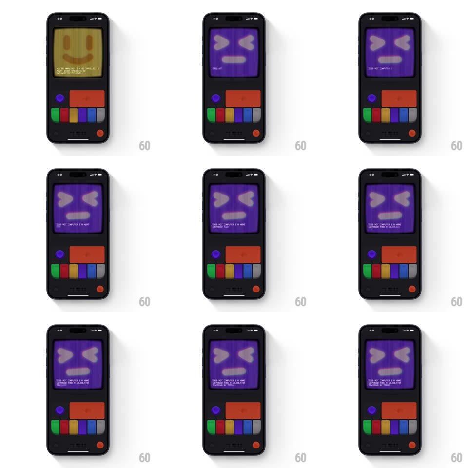

Media
Frame-by-frame

Rebuild this interaction 1:1: Mist's messy switch - tapping the switch flips the CRT from the warm yellow smiley to a deadpan purple "messy" face (criss-cross X eyes, flat straight mouth) through a burst of glitch frames, while confused copy types out underneath.

Rebuild this interaction 1:1: Mist's messy switch - tapping the switch flips the CRT from the warm yellow smiley to a deadpan purple "messy" face (criss-cross X eyes, flat straight mouth) through a burst of glitch frames, while confused copy types out underneath. ## Integration Integration: stack-agnostic spec - springs given as stiffness/damping, timed motions as duration + curve; map every value to your framework and animation library of choice. ## Scene Dark console body: CRT screen with a big pixel face, control cluster below (purple knob, wide red button, colored pill keys, red power dot). Resting state is the yellow happy face; toggled state is the purple X-eyed face. ## Motion spec Pattern: state flip with multi-frame glitch. - Tap: the screen tears through 3-4 glitch frames (~90ms total) - horizontal band displacement (+/-10px), RGB split, one inverted-luminance frame - then lands on the purple messy face. - The face swap is instant per frame; the transition's texture comes from the glitch burst, not a crossfade. - The purple face holds a flat, unimpressed expression: X-shaped eyes and a straight horizontal mouth, with a slow CRT flicker (luminance jitter 2%, 120ms). - Copy types out character by character (30ms/char, monospace, blinking block cursor): "DOES NOT COMPUTE? I TRIED. I TRIED. CONFUSED LIKE A CALCULATOR DIVIDING BY ZERO". - Switching back replays the glitch burst and restores the yellow smiley. ## Calibration - The glitch burst runs the same duration in both directions - the console has one "channel change" sound and feel. - The X eyes are chunky 2x2-block pixel X's, not thin strokes - they read at arm's length. ## Reduced motion Face and text appear without glitch frames or typing. ## Don't miss - Yellow (warm mustard) and purple (deep violet) are the two states' whole palettes - no gradients between them. - The mouth is perfectly straight and slightly off-center - asymmetry is the joke.